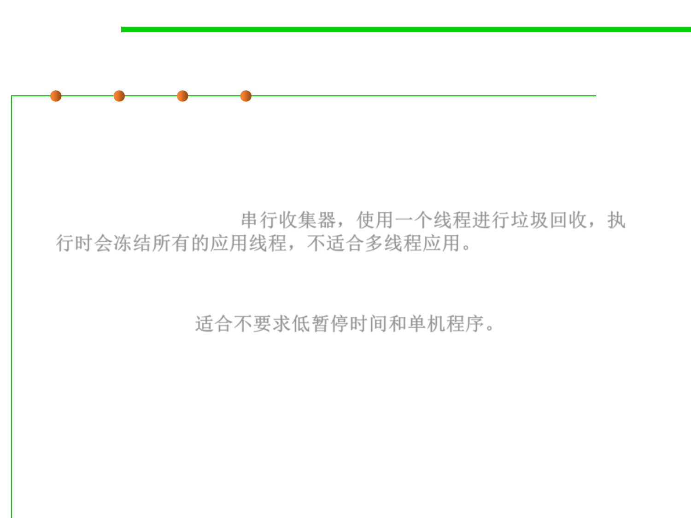

8.1 Metrics, Principles, and Methods of Construction for Performance
(2) Choosing a Garbage Collection Scheme
▪ The serial garbage collector is the simplest GC implementation, as it
basically works with a single thread. As a result, this GC
implementation freezes all application threads when it runs. Hence,
it is not a good idea to use it in multi-threaded applications like
server environments. 串行收集器，使用一个线程进行垃圾回收，执
行时会冻结所有的应用线程，不适合多线程应用。
▪ The Serial GC is the garbage collector of choice for most applications
that do not have small pause time requirements and run on client-
style machines. 适合不要求低暂停时间和单机程序。
▪ -XX:+UseSerialGC